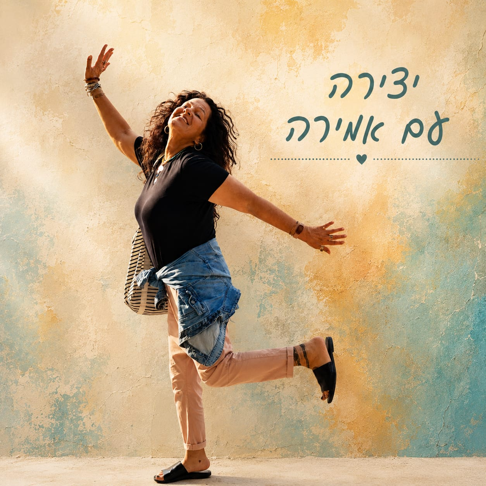
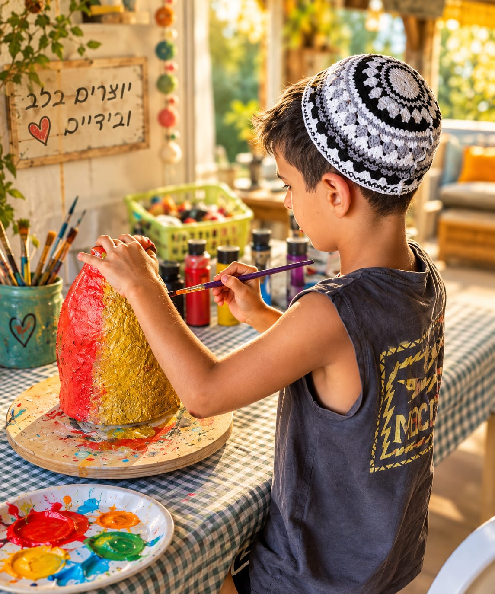
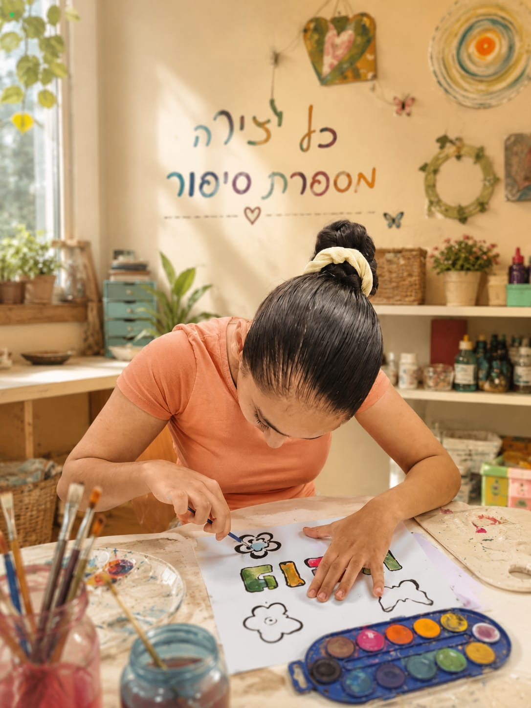
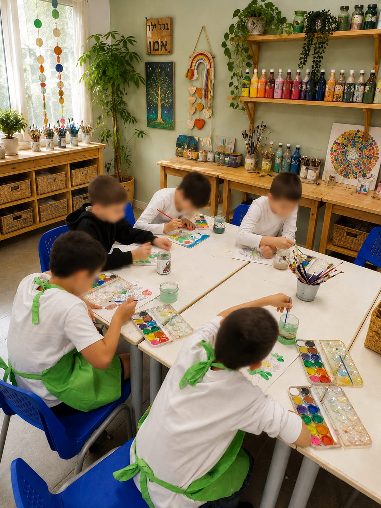

מעבר לקווים יצירה עם אמירה מרחב לביטוי רגשי באומנות
לפרטים והרשמה
מי אני?
אני סיגל וויינהוס־ריבק, יוצרת, מנחת סדנאות ותומכת רגשית באמנות, ומאחורי "מעבר לקווים."
האהבה שלי לאמנות תמיד הייתה הרבה מעבר ליצירה עצמה. עם השנים גיליתי שדווקא דרך הידיים, החומר והצבע נוצרים רגעים שבהם אפשר לעצור, להרגיש, להתחבר ולגלות בתוכנו כוחות שלא תמיד מקבלים מקום במילים.
מתוך החיבור הזה הקמתי את "מעבר לקווים" – מרחב שבו אני משלבת את האהבה שלי לאמנות עם הניסיון והכלים שצברתי בעבודה עם ילדים, בני נוער, מבוגרים, קבוצות ומסגרות חינוכיות.
אני מאמינה שלא צריך לדעת לצייר או להיות "יצירתיים" כדי ליצור. צריך רק מקום שמאפשר לנו לנסות, לטעות, להעז ולפעמים פשוט לצאת קצת מהקווים.
כי עבורי, יצירה היא לא רק מה שנשאר בסוף על הקנבס – אלא מה שקורה לנו בדרך.
הייחודיות שלנו
יחס אישי
הקשבה מלאה לצרכים של כל משתתף ומשתתפת במרחב בטוח ועוטף.
יצירה עם משמעות
היצירה אינה רק תוצר, אלא תהליך של גילוי עצמי וביטוי אותנטי.
אמנות ועולם רגשי
חיבור עמוק בין עולם היצירה והחומר לעולם הרגשי הפנימי.
איך אפשר להיפגש איתי?

מפגשים אישיים
מרחב לביטוי, חיבור וחיזוק רגשי דרך אמנות, יצירה וכלים מעולם ה־NLP, בקצב ובדרך האישית של כל אחד.
- מענה רגשי באמנות לילדים ובני נוער
- מענה רגשי באמנות למבוגרים
- מפגשי הורה–ילד / אם–בת
מענה רגשי באמנות לילדים ובני נוער
מפגשים אישיים המשלבים יצירה, שיח וכלים מעולם ה־NLP, במרחב בטוח ומאפשר. המפגשים נותנים מקום לביטוי רגשי, לחיזוק הביטחון והערך העצמי, להתמודדות עם קשיים חברתיים, פחדים, שינויים ואתגרים ולגילוי הכוחות שכבר נמצאים בילד.
מענה רגשי באמנות למבוגרים
מרחב אישי המשלב יצירה, שיח וכלים מעולם ה־NLP ומאפשר לעצור, להתבונן, לבטא ולהתחבר לעצמנו. מתאים גם בתקופות של שינוי, בצמתים בחיים או כשפשוט מרגישים צורך במקום שהוא עבורנו.
מפגשי הורה–ילד / אם–בת
זמן משותף קצת אחר. מפגש דרך יצירה וחוויה שמאפשר לצאת מהשגרה, להיות יחד, לחזק את הקשר ולפתוח מרחב לתקשורת, הקשבה והנאה משותפת.

סדנאות בסטודיו
זמן ליצור, להתנסות, ליהנות ולהתחבר לעצמנו ולאחרים, באווירה אישית ובקבוצות קטנות.
- סדנאות יצירה לילדים ובני נוער
- סדנאות יצירה למבוגרים
- סדנאות נשים וקבוצות קטנות
- סדנאות ואירועים בהתאמה אישית
סדנאות יצירה לילדים ובני נוער
מפגשים אישיים המשלבים יצירה, שיח וכלים מעולם ה־NLP, במרחב בטוח ומאפשר. המפגשים נותנים מקום לביטוי רגשי, לחיזוק הביטחון והערך העצמי, להתמודדות עם קשיים חברתיים, פחדים, שינויים ואתגרים ולגילוי הכוחות שכבר נמצאים בילד.
סדנאות יצירה למבוגרים
מרחב אישי המשלב יצירה, שיח וכלים מעולם ה־NLP ומאפשר לעצור, להתבונן, לבטא ולהתחבר לעצמנו. מתאים גם בתקופות של שינוי, בצמתים בחיים או כשפשוט מרגישים צורך במקום שהוא עבורנו.
סדנאות נשים וקבוצות קטנות
זמן לעצור, ליצור ולהתחבר. מפגשים וסדנאות המשלבים יצירה, חוויה ושיח סביב נושאים כמו כוחות, חלומות, שינוי, זהות וחיבור לעצמי – או פשוט זמן איכות של יצירה משותפת.
סדנאות ואירועים בהתאמה אישית
יום הולדת, מפגש חברות, פעילות משפחתית, חג או אירוע קהילתי? אפשר לבנות יחד סדנה שמתאימה בדיוק לאנשים, למקום ולאופי האירוע.
לא צריך לדעת לצייר ולא צריך להיות "טובים באמנות". צריך רק להגיע כמו שאתם – ולתת לעצמכם לצאת קצת מעבר לקווים.
בואו נדבר
אני מגיעה אליכם
סדנאות ותוכניות יצירה המותאמות לקבוצות, לקהילות ולמסגרות חינוכיות, במפגש חד־פעמי או בתהליך מתמשך.
- תוכניות לבתי ספר ולמסגרות חינוכיות
- סדנאות לקהילות, צוותים ומועדוני ותיקים
- סדנאות לאירועים פרטיים וקהילתיים
תוכניות לבתי ספר ולמסגרות חינוכיות
תוכניות ומפגשים קבוצתיים ואישיים המשלבים אמנות ומענה רגשי בחינוך הרגיל ובחינוך המיוחד. התכנים מותאמים לצורכי המסגרת ויכולים לעסוק בשייכות, ביטחון עצמי, ביטוי רגשי, מיומנויות חברתיות וחיזוק תחושת המסוגלות.
סדנאות לקהילות, צוותים, מועדוני ותיקים וארגונים
"מעבר לקווים" מגיע גם אליכם. סדנאות המותאמות במיוחד לקבוצה – צוותים, קבוצות נשים, מועדוני ותיקים, קהילות, יישובים ואירועים. אפשר להזמין מפגש חד־פעמי או לבנות סדרת מפגשים.
סדנאות לאירועים פרטיים וקהילתיים
יום הולדת, מפגש חברות, פעילות משפחתית, חג או אירוע קהילתי? אפשר לבנות יחד סדנה שמתאימה בדיוק לאנשים, למקום ולאופי האירוע.
לא צריך לדעת לצייר ולא צריך להיות "טובים באמנות". צריך רק להגיע כמו שאתם – ולתת לעצמכם לצאת קצת מעבר לקווים.
בואו נדברהממליצים שלנו
גלריה
בואו נדבר
מעוניינים בפרטים נוספים או להירשם לסדנה? מלאו את הפרטים ואחזור אליכם בהקדם.
פרטי התקשרות
טלפון / וואטסאפ: 052-8824630 — סיגל
אימייל: diegal05@gmail.com
מיקום: מושב ישע
ניווט ישיר: לניווט דרך Google Maps / Waze